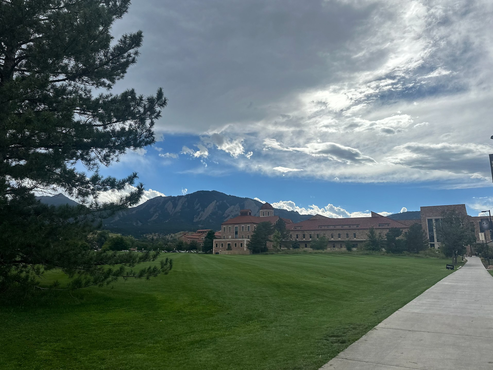
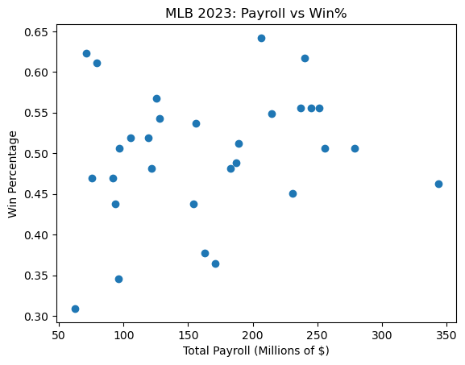

Sophia
Jensen.
Exploring how data, AI, and human-centered design shape the way we interact with technology.
Explore my work ↗
BOULDER, COLORADO / CU BOULDERSelected work.
Two completed projects I’m proud of, with a new SQL analysis on the way. Explore the research, decisions, and technical work behind each.
 01 / BUILD + PROTOTYPEView project ↗
01 / BUILD + PROTOTYPEView project ↗
Time
Cypher
A puzzle-based alarm clock prototype combining an Arduino, programming, and hands-on design. A project I especially enjoyed bringing from idea to physical form.
Explore case study ↗
02 / DATA + ANALYTICSView project ↗MLB payroll
& performance
Exploring the relationship between Major League Baseball team payrolls and competitive results using data analysis and visualization.
Explore case study ↗SQL project walkthrough
No video uploaded yet — I’ll add my own recording.A little about me.
I'm an Information Science student at CU Boulder, drawn to projects that connect technology with the people who use it.
I'm pursuing a minor in Business Analytics and graduate in May 2027. My interests span data analysis, AI and automation, UX research, and product thinking.
Through coursework, research projects, and my AI & Automation internship at Ampra AI, I've been learning how to investigate complex problems and communicate practical solutions.
View my résumé ↗Tools & methods
- Python
- SQL
- R
- Pandas
- Visualization
- Claude
- n8n
- Codex
- Apps Script
- AI workflows
- Qualtrics
- Interviews
- Surveys
- Qualitative analysis
- Data storytelling
- Human-centered design
- UX research
- Process analysis
- Product thinking
The résumé.
Education, experience, technical skills, and selected research projects, all in one place.